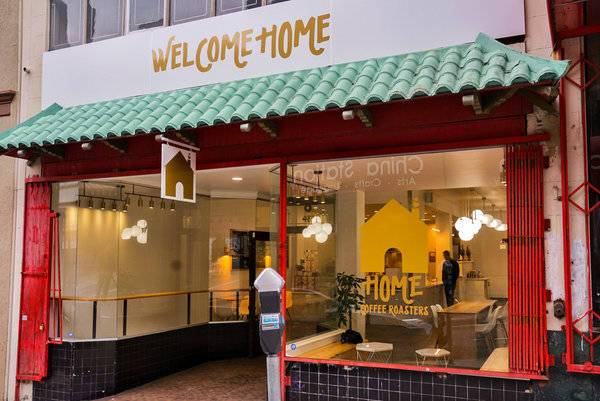

SIGN-IN
About Home Coffee
Coffee and Merchandise
Annie Cheng and In Hwan Heo have always had a deep rooted love and passion for coffee and people. For years they would go on weekly cafe dates and talk about their dream of one day opening a coffee shop together.
On Valentine’s Day of 2015, Annie and In’s dream came true. They opened the doors to their first coffee shop on Noriega street in San Francisco’s Sunset District. It was here that HOME was founded, and it was here that Annie and In’s dream came to life.
